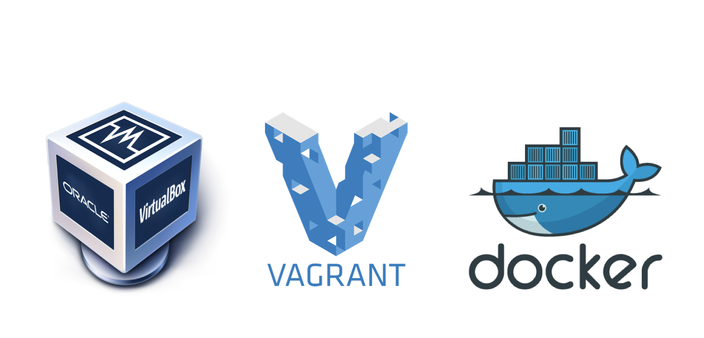

Drupal 8 Site Building, Configuration Management and Cloud Hosting for Agencies and Associations
Who are we
http://www.ffwagency.com
Credits and Disclaimers
Thank you to all who contributed to this presentation including every single D8 contributor and @webchick @learningdrupal @socketwench @drupalassociation @ffwglobal @ffwdev @jmolivas
Find us at
ray.saltini@ffwagency.com
@raysaltini
ricardo.osuna@ffwagency.com
eric.mandel@blackmesh.com
Class Notes - https://goo.gl/B3ESK1
Feedback - ffwcoe.drupalgardens.com
How different is D8?
Not that different!
(If you're a site builder)
Many of the concepts are the same
Users and Permissions
Structuring Content
Modules
And it's even easier!
Views in core
Better, out-of-the-box i18n Support
(Much less modules to install, yay!)
Where it's different
Writing modules
Writing themes
Upgrading core and modules
Deploying Configuration
Getting a development environment
Many options
Local installation
Virtualization
Hosting Providers
Local Installation
Install a webserver on your laptop
Virtualized Environments

Virtualized Environments
Virtualization Providers
Virtualization Providers

Virtualization Providers
Hosting Providers

And many others...
Installation
New Requirements
New Requirements

New Requirements
New Requirements
New Requirements
New Requirements
New Requirements
Download Drupal
https://www.drupal.org/project/drupal

Installing Dev Desktop
https://www.acquia.com/downloads

Using Simplytest.me
Using Simplytest.me
The Install Wizard
Prettier & handles languages better
Asks similar questions as in 7.x
Hosting providers may do this for you!
Using the Install Wizard
Using the Install Wizard

Using the Install Wizard

Using the Install Wizard
Using the Install Wizard

Using the Install Wizard
Using the Install Wizard
Do try at home!
If you don't have a web server installed, choose a hosting provider
Install the latest Drupal 8 Beta
Time: 15 minutes
Structuring Content
Adding Node Types
Nothing looks that different
Yep, we need to go deeper
Features Module
Saves configuration to code
Works okay in Drupal 7
A Tale of Two Entity Kinds
Configuration Entities
Administrator-built structures

Configuration Entities
Administrator-built structures
Configuration Entities
Administrator-built structures
Configuration Entities
Administrator-built structures
Content Entities
User created & instantiated objects
Content Entities
User created & instantiated objects
Content Entities
User created & instantiated objects
Content Entities
User created & instantiated objects
Managing Configuration
Config Management UI
Admin > Development > Configuration Management
Single Export
Full Export
Creates a *.tar.gz of all site configurations
Easiest way to get export filnames
Do try at home
Create a new content (node) type
Export your new content type
Make changes to your content type
Export your content type again, what changed?
Time: 10 minutes
Fields
Nodes and Fields
Nodes and Fields
Nodes and Fields

Nodes and Fields
Fields and the Database
Fields and the Database
Fields and the Database
Fields and the Database
Fields and the Database
Field names no longer global!
Tied to their owning entity type
entity_type/field_name
Sharing Fields in 8.x
No longer sharable between entity types (node, user)
Sharable between bundles (article, story)
New Field Types
Comments
Entity Reference
Link
Date
Telephone
Fields are Plugins!
Not a module, not a Wordpress "Plugin"
Programming pattern -- Object-oriented info hook
Other Plugins
And many others...
Fields are also Config Entities
Exportable to *.yml
Migrated from site to site
Do try at home!
Create a new field for your content type
Re-export your content type, did anything change?
Explore the export interface, find two places to export your field
Time: 10 minutes
Users
Managing Users
Admin > People
Superuser account created on install
No real changes here
Account Settings
Admin > Configure > People > Account Settings
Welcome messages, email prefs, field management
Pretty much as you expect
Account Form Display
New in 8
Control order of fields on user edit form
Exporting Account Settings
Stored as simple config
Do try at home
Create a new user
Create a custom field for the user, export it
Answer: Are users content or config?
Answer: How many exports are needed to capture account customizations?
Time: 7 Minutes
Roles and Permissions
Three rules for permissions

Managing Roles
Admin > People > "Roles" tab
Roles are now config entities
No UI changes from 7.x
Managing Permissions
Admin > People > "Permissions" tab
Set checkbox = Grants permission
Clear checkbox = Doesn't grant, doesn't deny
Default Roles
Default Roles
Default Roles
Default Roles
Default Roles
Do try at home
Create a "content editor" role
Assign it node creation/editing rights
Answer: How do you export permissions?
Time: 8 minutes
Views
Now in core!
No more waiting to build real sites
Views UI
Largely unchanged from 7.x
No more overrides!
Core's own UI uses views
Makes modifying core pages easy and safe
Views are Config Entities
Exportable, migratable
Uses core's main export UI, not Views UI
Do try at home
Create demo content using your new content type
Beginners: Create a new view for your content type
Modify one of core's default views
Export the view configuration
Time: 10 minutes
Modules
Yes! They still exist!
You'll need less of them for a functional site
Vastly different programming makes porting difficult
Installation and config management is different
Installing Modules
No built-in FTP downloader
Use drush 7.x or download manually
Please use version control
No really, use version control
Many hosting providers have it baked in
No really, use version control
Many hosting providers have it baked in
No really, use version control
Many hosting providers have it baked in
Where do contrib modules go?
Where do contrib modules go?
Where do contrib modules go?
Where do contrib modules go?
That's...confusing
Yeah, it's the opposite of 7.x
core/ directory makes upgrading easier
There is no sites/all directory
Contrib Modules and Configuration
Any properly designed module will have exportable config
Saving directly to database tables is strongly discouraged
Default Module Configuration
Default Module Configuration
Default Module Configuration
Default Config YML
Often exported from Drupal itself
Makes creating "features" modules easy!
Flag Module for 8.x
https://www.drupal.org/project/flag
Download the 8.x-4.x-dev version
Do try at home
Download and install Flag module
Create a new Flag: Admin > Structure > Flags
Export your new Flag
Time: 15 minutes
Themes
Themes are a lot like modules
Install manually or with drush
Where do themes go?
Where do themes go?
Okay, just like modules
It's the opposite of 7.x, but...
...it's much easier to find.
So what's different?
Well, lots, actually.
Twig In Core
Replaces PHPtemplate
Common outside of Drupal
Fast; compiles down to PHP
Where can I learn more about Twig?
http://twig.sensiolabs.org/documentation
https://www.drupal.org/theme-guide/8
Other Front-End Improvements
Latest JQuery and Backbone.js
Accessible and responsive
Do try at home
Download and install Omega 8.x
Time: 5 minutes
CMI
Module Provided Configuration
No Features required!
Basic Feature Module
Basic *.info.yml
name: My Blog
type: module
description: My Awesome Blog Feature
core: 8.x
package: Features
dependencies:
- link
*.module file
Required, even if empty
Generating Modules
drupal generate:module
Perform a full export
Filenames are significant!
Much easier to build, then export
Finding Files
Node type ID, field ID, etc.
Start with the biggest piece, and look for dependencies
Dependencies Export Entry
uuid: 88ba4ba6-2694-4154-9048-72fb7fdb4e4c
langcode: en
status: true
dependencies:
config:
- field.storage.node.field_see_also
- node.type.blog
module:
- link
id: node.blog.field_see_also
field_name: field_see_also
entity_type: node
bundle: blog
label: 'See also'
Prepairing Export Files
Each configuration assigned a UUID
Remove if you need unique IDs between dev/test/prod
node.type.blog.yml
uuid: cf4c20f8-213a-46fc-8a06-6f1036203231
langcode: en
status: true
dependencies:
module:
- menu_ui
third_party_settings:
menu_ui:
available_menus:
- main
parent: 'main:'
name: Blog
type: blog
description: ''
help: ''
new_revision: false
preview_mode: 1
display_submitted: true
Failing Meet Dependencies
Will halt module enabling
Error message will identify missing configuration
Do try at home
Perform a full export
Build a new feature module based on your custom content type
Delete your custom configuration
Upload and enable your custom module
Time: 20 minutes
Do try this at home
https://github.com/raysaltini/handsOnD8SiteBuilder
Thank you!
ray.saltini@ffwagency.com
@raysaltini
ffwagency.com
feedback - http://www.ffwcoe.drupalgardens.com